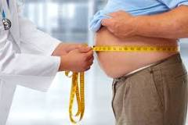

O que é obesidade e como evitar
Especialistas explicam e dão dicas para combater a obesidade

De acordo com a Organização Mundial da Saúde (OMS), a obesidade é uma condição de caráter multifatorial que favorece o acúmulo de gordura. Esse acúmulo, por sua vez, está associado a riscos para a saúde devido à sua relação com complicações metabólicas, como aumento da pressão arterial, dos níveis de colesterol e triglicerídeos sanguíneos e resistência à insulina.
Como sei se estou obeso?
A recomendação da OMS para avaliar o estado nutricional de uma pessoa é o Índice de Massa Corporal (IMC). Esse cálculo é feito da seguinte forma: peso (em kg) dividido pela altura² (em metros). Dentro desse cálculo, uma pessoa é classificada com obesidade quando o IMC é igual ou superior a 30 kg/m². Mas, segundo o Ministério da Saúde, a doença possui três estágios:
Primeiro, a obesidade de grau 1 (IMC entre 30,0 e 34,9 Kg/m²);
Depois, a obesidade de grau 2 (IMC entre 35 e 39,9 kg/m²);
Então, a obesidade de grau 3 (IMC maior do que 40,0 Kg/m2).
Quer calcular o seu IMC? Então, acesse a calculadora de IMC da Associação Brasileira para o Estudo da Obesidade e Síndrome Metabólica (Abeso).
Como tratar a obesidade?
A obesidade é uma doença crônica, por isso, quando você deixa de tratar, ela volta. Esse controle vai depender de três pilares: mudança de hábitos alimentares, prática de atividade física e, além disso, dependendo do padrão alimentar, será necessário algum medicamento”, explica o Dr. Mario Kedhi Carra, endocrinologista e presidente da Abeso